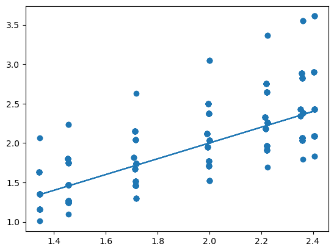
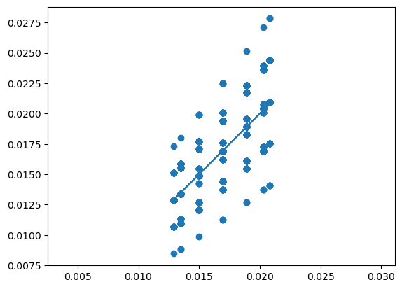
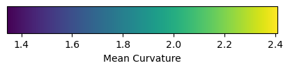

import numpy as np
from scipy import sparse, optimize
import matplotlib.pyplot as plt
import meshplot
import iglTutorial: Membrane mechanics
This tutorial uses triangulax to study the mechanics of membranes. We numerically represent a membrane as a triangular mesh, and finds its mechanically balanced configuration by energy minimization, using automatic differentiation to calculate energy gradients.
import jax.numpy as jnp
import jaxjax.config.update("jax_enable_x64", True)
jax.config.update("jax_debug_nans", True)import lineax
import optimistixfrom triangulax import trigonometry as trig
from triangulax import geometry as geom
from triangulax import adjacency as adj
from triangulax import linops as lin
from triangulax.triangular import TriMesh
from triangulax.mesh import HeMesh, GeomMesh
from triangulax import linops
from triangulax import algorithms as algoComputing the mean curvature
The mean curvature of a surface (see wikipedia, and Crane, Chpt. 5) can be computed from the Laplace operator, applied to the vertex positions \(\mathbf{v}\) as \(\Delta\mathbf{v} = 2H\mathbf{n}\), where \(\mathbf{n}\) is the surface normal. To compute the curvature \(H\) numerically, one can also use the dihedral angles \(\theta_{ij}\) of each edge \(ij\): the angles between the normal vectors of adjacent triangles. The mean curvature at vertex \(i\) can be approximated by \[H_i = \frac{1}{4a_i} \sum_{j\sim i} \ell_{ij} \theta_{ij} \] where the sum is over all \(j\) neighboring \(i\), and \(a_i\) is the barycentric area around vertex \(i\). This discretization turns out to be more robust numerically, and is already implemented in the geometry module.
# let's look at a torus which has varying mean curvature
torus = TriMesh.read_obj("../test_meshes/torus.obj",dim =3)
hemesh_torus = HeMesh.from_triangles(torus.vertices.shape[0], torus.faces)
H_torus_lap = geom.get_mean_curvature_laplace(torus.vertices, hemesh_torus, normalize=True)
H_torus_dihed = geom.get_mean_curvature_dihedral(torus.vertices, hemesh_torus, normalize=True)
_, _, k1_t, k2_t, _ = igl.principal_curvature(torus.vertices.astype(np.float64), hemesh_torus.faces)
H_torus_dihed_igl = (k1_t + k2_t) / 2Warning: readOBJ() ignored non-comment line 3:
o Torusplt.scatter(H_torus_lap, H_torus_dihed)
plt.plot(H_torus_lap, H_torus_lap)
dihedral_angles = geom.get_dihedral_angles(torus.vertices, hemesh_torus)
edge_lengths = geom.get_he_length(torus.vertices, hemesh_torus)
barycentric_areas = geom.get_barycentric_cell_areas(torus.vertices, hemesh_torus)
H_dihedral = 1/4 * adj.sum_he_to_vertex_incoming(hemesh_torus, dihedral_angles*edge_lengths) #/ barycentric_areasdef sum_face_to_vertex(hemesh, f_field):
out_shape = (hemesh.n_vertices,) + f_field.shape[1:]
v_field = jnp.zeros(out_shape, dtype=f_field.dtype)
return v_fieldvoronoi_areas = geom.get_voronoi_areas(torus.vertices, hemesh_torus)
barycentric_areas = adj.sum_face_to_vertex(hemesh_torus, geom.get_triangle_areas(torus.vertices, hemesh_torus)) / 3jnp.corrcoef(voronoi_areas, barycentric_areas)[0,1]Array(0.75766347, dtype=float64)plt.plot(voronoi_areas, voronoi_areas)
plt.scatter(voronoi_areas, barycentric_areas)
plt.axis("equal")(np.float64(0.012526973519759777),
np.float64(0.02118819260173175),
np.float64(0.007494206881595273),
np.float64(0.02879906913864483))
#meshplot.plot(torus.vertices, hemesh_torus.faces , np.array(H_torus), shading={"wireframe": True})
meshplot.plot(torus.vertices, hemesh_torus.faces , np.array(H_torus_dihed_igl), shading={"wireframe": True})
#meshplot.plot(torus.vertices, hemesh_torus.faces , np.array(H_torus_dihed), shading={"wireframe": True})
# add a colorbar
fig, ax = plt.subplots(figsize=(5, 0.5))
sm = plt.cm.ScalarMappable(cmap='viridis',norm=plt.Normalize(vmin=np.array(H_torus_lap).min(),
vmax=np.array(H_torus_lap).max()))
cbar = fig.colorbar(sm, cax=ax, orientation='horizontal')
cbar.set_label('Mean Curvature')
plt.show()
Minimal surfaces
As a first example, let’s consider a membrane \(\mathcal{M}\) whose energy is dominated by surface tension, so the energy is proportional to the membrane area \(E_A = \int_{\mathcal{M}} dA\). Note that moving vertices within the plane of the mesh does not change the total area/energy (physically, this is because membranes are fluid in-plane, rather than thin elastic sheets). This has important numerical consequences: we will want to arrange the mesh vertices so as to avoid a highly distorted mesh with very stretched triangles.
A nice algorithm by Pinkall and Poitier takes care of this problem. It uses the discretized Laplacian which we already used in the previous notebook for the heat equation. The idea is that to minimize the area, the position of a vertex \(\mathbf{v}_i\) should be equal to the (geometry-weighted) average of its neighbors, and therefore \(\Delta \mathbf{v}_i = 0\). The resulting iterative algorithm works as follows.
- Given the vertex-positions \(\mathbf{v}_i^{(t)}\) at step \(t\), compute the cotan-Laplacian matrix \(\Delta^{(t)}_{ij}\)
- Solve \(\Delta^{(t)}_{ij} \cdot \mathbf{v}_i^{(t+1)} =0\), subject to fixed boundary conditions.
# let's load a simple test mesh
trimesh = TriMesh.read_obj("../test_meshes/disk.obj", dim=3)
hemesh = HeMesh.from_triangles(trimesh.vertices.shape[0], trimesh.faces)
fig = plt.figure(figsize=(4,4))
plt.triplot(*trimesh.vertices[:,:2].T, trimesh.faces)
plt.axis("equal");Warning: readOBJ() ignored non-comment line 3:
o flat_tri_ecmc
# let's impose some boundary conditions on the disk mesh - think of this as finding the shape of a "soap film"
# with a given boundary curve.
bdry_verts = np.where(hemesh.is_bdry)[0]
interior_verts = np.where(~hemesh.is_bdry)[0]
phi_bdry = np.atan2(*trimesh.vertices[bdry_verts, :2].T)
h = 0.5*np.sin(2*phi_bdry)
bdry_pos = np.array(trimesh.vertices[bdry_verts, :])
bdry_pos[:, -1] = h
vertices_bdry_imposed = np.copy(trimesh.vertices)
vertices_bdry_imposed[bdry_verts] = bdry_pos# the non-optimized membrane is pretty creased
meshplot.plot(vertices_bdry_imposed, hemesh.faces, shading={"wireframe":False}, return_plot=True)<meshplot.Viewer.Viewer at 0x34c86e350># compute the area of the initial configuration - this is the energy we will minimize
initial_area = geom.get_area(vertices_bdry_imposed, hemesh)
print(f"Initial area: {initial_area:.4f}")Initial area: 4.3650# let's check the cotan-Laplacian gives us the area via A = 1/2 * v^T L v, where v are the vertex positions
L = linops.cotan_laplace_sparse(vertices_bdry_imposed, hemesh)
area_L = -jnp.diag(vertices_bdry_imposed.T.dot(L @ vertices_bdry_imposed)).sum() /2
print(f"Initial area from Laplace operator: {area_L:.4f}")Initial area from Laplace operator: 4.3650# Let's use the iterative Pinkall-Poitier method to find the mininum energy configuration.
vertices_iterated = [np.copy(vertices_bdry_imposed)]
for t in range(10):
L = linops.bcoo_to_scipy(linops.cotan_laplace_sparse(vertices_iterated[-1], hemesh)) # compute Laplace matrix
# impose boundary conditions by splitting the Laplace matrix into interior and boundary vertices
L_ii = L[interior_verts, :][:, interior_verts]
L_ib = L[interior_verts, :][:, bdry_verts]
bcs = vertices_bdry_imposed[bdry_verts,:]
new_vertices = np.zeros_like(vertices_iterated[-1])
new_vertices[bdry_verts] = bcs
solution = np.stack([sparse.linalg.spsolve(-L_ii, L_ib.dot(bc)) for bc in bcs.T], axis=-1)
# iterate over x/y/z coordinates
new_vertices[interior_verts] = solution
vertices_iterated.append(new_vertices)# as a result of the optimization, we get an area-minimizing "Pringles" surface
meshplot.plot(vertices_iterated[-1], hemesh.faces, shading={"wireframe":True}, return_plot=True)<meshplot.Viewer.Viewer at 0x373708f50>final_area = geom.get_area(vertices_iterated[-1], hemesh)
print(f"Initial area: {initial_area:.4f}", f"Final area: {final_area:.4f}")Initial area: 4.3650 Final area: 3.7981# the gradient of the area is very small after optimization:
(jnp.linalg.norm(jax.grad(geom.get_area)(vertices_iterated[0], hemesh), axis=-1)[interior_verts].mean(),
jnp.linalg.norm(jax.grad(geom.get_area)(vertices_iterated[-1], hemesh), axis=-1)[interior_verts].mean())(Array(0.06015605, dtype=float64), Array(0.00068703, dtype=float64))# the mean curvature is also very small after optimization, as expected for a minimal surface:
H_laplace = get_mean_curvature_laplace(vertices_iterated[-1], hemesh)
jnp.abs(H_laplace).mean()Array(0.06984846, dtype=float64)Helfrich energy
Next, let’s consider a membrane for which the surface tension is negligible. This is the case for many of the lipid bilayer membranes that make up the cell and its interior organelles. Instead, the energy is dominated by bending.
The Helfrich energy is an elegant, geometric model of bending energy. It uses the mean and Gaussian curvatures \(H, K\) of the surface \(\mathcal{M}\). The energy reads:
\[E_H =\int dA \left( \frac{\kappa_H}{2}(H-H_0)^2 + \kappa_G K \right) \]
If the surface is closed, the \(\int K\)-term is a topological invariant and can be dropped (and we will do so here). A nonzero spontaneous curvature \(H_0\) means that the membrane “prefers” to be curved; this can result, for instance, from molecules that bind to the membrane.
# let's load a sphere as a test mesh for the Helfrich energy
trimesh = TriMesh.read_obj("../test_meshes/sphere_fine.obj", dim=3) # sphere_fine sphere
trimesh.vertices -= trimesh.vertices.mean(axis=0)
trimesh.vertices = (trimesh.vertices.T / np.linalg.norm(trimesh.vertices, axis=1)).T
hemesh = HeMesh.from_triangles(trimesh.vertices.shape[0], trimesh.faces)Warning: readOBJ() ignored non-comment line 4:
o Icospheremeshplot.plot(trimesh.vertices, hemesh.faces, shading={"wireframe":True})<meshplot.Viewer.Viewer at 0x34c8a43e0># let's define the discrete Helfrich energy.
@jax.jit
def get_helfrich_energy(vertices, args):
"""Compute the discrete Helfrich energy of a triangulated surface. args = (hemesh, H0, kappa)"""
hemesh, H0, kappa = args
H = geom.get_mean_curvature_dihedral(vertices, hemesh)
#H = get_mean_curvature_laplace(vertices, hemesh)
cell_areas = geom.get_barycentric_cell_areas(vertices, hemesh)
return (kappa/2) * ((H - H0) **2 * cell_areas).sum()# let's check the mean-curvature of the sphere using the Laplace operator - this should be constant across all vertices
vertices = trimesh.vertices
H_laplace = get_mean_curvature_laplace(vertices, hemesh)
H_dihedral = geom.get_mean_curvature_dihedral(vertices, hemesh)
# let's compute the radius of the sphere:
R = jnp.linalg.norm(vertices-vertices.mean(axis=0), axis=-1).mean()
print("H (Laplace)", H_laplace.mean(), "H - 1/R:", jnp.abs(H_laplace - 1/R).mean())
print("H (Dihedral)", H_dihedral.mean(), "H - 1/R:", jnp.abs(H_dihedral - 1/R).mean())H (Laplace) 1.0000076108652165 H - 1/R: 7.6108652156698455e-06
H (Dihedral) 1.0044138499642183 H - 1/R: 0.004413849964217461args = (hemesh, 0, 1)
# exact helfrich for a sphere is 2*pi, here smaller due to discretization error. The energy is scale invariant.
get_helfrich_energy(trimesh.vertices, args), get_helfrich_energy(2*trimesh.vertices, args)(Array(6.29466847, dtype=float64), Array(6.29466847, dtype=float64))# now, let's deform the sphere and minimize the Helfrich energy to find the equilibrium shape.
deformed_vertices = trimesh.vertices.at[:, 1].add(0.5*trimesh.vertices[:, 1]**3)
deformed_vertices = trimesh.vertices.at[:, 2].add(0.5*trimesh.vertices[:, 0]**3)
print("Minimum vs deformed energy:", get_helfrich_energy(trimesh.vertices, args),
get_helfrich_energy(deformed_vertices, args))Minimum vs deformed energy: 6.294668468631172 7.159011639563514meshplot.plot(deformed_vertices, hemesh.faces, shading={"wireframe":True})<meshplot.Viewer.Viewer at 0x37ca7ecf0># we can compute the energy gradient
grad = jax.grad(get_helfrich_energy)(deformed_vertices, args)
normal = geom.get_vertex_normals(deformed_vertices, hemesh)
grad_norm = jnp.linalg.norm(grad, axis=-1)
(jnp.abs(jnp.linalg.vecdot(grad, normal)) / grad_norm).mean() # gradient is along normalArray(0.98613633, dtype=float64)import jax.test_utiljax.test_util.check_grads(get_helfrich_energy, (deformed_vertices, args), order=1, modes=('fwd', 'rev'),
atol=None, rtol=None, eps=None)--------------------------------------------------------------------------- TypeError Traceback (most recent call last) Cell In[43], line 1 ----> 1 jax.test_util.check_grads(get_helfrich_energy, (deformed_vertices, args), order=1, modes=('fwd', 'rev'), 2 atol=None, rtol=None, eps=None) File ~/miniforge3/envs/triangulax/lib/python3.14/site-packages/jax/_src/public_test_util.py:368, in check_grads(f, args, order, modes, atol, rtol, eps) 365 if order > 1: 366 _check_grads(partial(_jvp_from_lin, f), (args, args), order - 1, lin_msg) --> 368 _check_grads(f, args, order) File ~/miniforge3/envs/triangulax/lib/python3.14/site-packages/jax/_src/public_test_util.py:349, in check_grads.<locals>._check_grads(f, args, order, err_msg) 347 if "fwd" in modes: 348 fwd_msg = f'JVP of {err_msg}' if err_msg else 'JVP' --> 349 _check_jvp(f, partial(api.jvp, f), args, err_msg=fwd_msg) 350 if order > 1: 351 _check_grads(partial(api.jvp, f), (args, args), order - 1, fwd_msg) File ~/miniforge3/envs/triangulax/lib/python3.14/site-packages/jax/_src/public_test_util.py:268, in check_jvp(f, f_jvp, args, atol, rtol, eps, err_msg) 266 rng = np.random.RandomState(0) 267 tangent = tree_map(partial(rand_like, rng), args) --> 268 v_out, t_out = f_jvp(args, tangent) 269 _check_dtypes_match(v_out, t_out) 270 v_out_expected = f(*args) [... skipping hidden 2 frame] File ~/miniforge3/envs/triangulax/lib/python3.14/site-packages/jax/_src/api.py:1851, in _jvp(fun, primals, tangents, has_aux) 1849 if not isinstance(core.typeof(p), ShapedArray): continue 1850 if core.primal_dtype_to_tangent_dtype(_dtype(p)) != _dtype(t): -> 1851 raise TypeError("primal and tangent arguments to jax.jvp do not match; " 1852 "dtypes must be equal, or in case of int/bool primal dtype " 1853 "the tangent dtype must be float0." 1854 f"Got primal dtype {_dtype(p)} and so expected tangent dtype " 1855 f"{core.primal_dtype_to_tangent_dtype(_dtype(p))}, but got " 1856 f"tangent dtype {_dtype(t)} instead.") 1857 if np.shape(p) != np.shape(t): 1858 raise ValueError("jvp called with different primal and tangent shapes;" 1859 f"Got primal shape {np.shape(p)} and tangent shape as {np.shape(t)}") TypeError: primal and tangent arguments to jax.jvp do not match; dtypes must be equal, or in case of int/bool primal dtype the tangent dtype must be float0.Got primal dtype int64 and so expected tangent dtype [('float0', 'V')], but got tangent dtype int64 instead.
Nonlinear minimization
To minimize the energy, we can use one of many non-linear minimization algorithms, all of which use the gradient \(\nabla E_H\) which we can compute using JAX. Here, we use the JAX-based optimization library optimistix.
solver = optimistix.BFGS(rtol=1e-8, atol=1e-8)
y0 = deformed_vertices
args = (hemesh, 0, 1)
sol = optimistix.minimise(get_helfrich_energy, solver, y0, args, max_steps=2000, throw=False)
vertices_final = sol.valueprint("Initial/final/minimal energy:", get_helfrich_energy(y0, args),
get_helfrich_energy(sol.value, args),
get_helfrich_energy(trimesh.vertices, args))Initial/final/minimal energy: 7.064731463226383 5.66644072931026 6.2531824128234526# displacement from initial condition.
jnp.linalg.norm(y0-sol.value, axis=-1).mean(), jnp.linalg.norm(y0-trimesh.vertices, axis=-1).mean()(Array(0.04425016, dtype=float64), Array(0.12507872, dtype=float64))# after minimization, the deviation from being a perfect sphere is fairly low
center = jnp.average(vertices_final, weights=geom.get_barycentric_cell_areas(vertices_final, hemesh), axis=0)
Rs = jnp.linalg.norm(vertices_final - center, axis=1)
Rs.std() / Rs.mean()Array(0.04188804, dtype=float64)p = meshplot.plot(y0, hemesh.faces, np.array(grad_norm),shading={"wireframe":True}, return_plot=True)
p.add_mesh(sol.value + np.array([0, 0, 3]), hemesh.faces, shading={"wireframe":True})1Constrained minimization using Penalty and Augmented Lagrangian methods
Much of the physics of membranes arises from balancing the Helfrich bending energy with constraints on the volume \(V\) and area \(A\) of the membrane. For simplicity, we softly enforce these contrstraints with quadratic penalty terms in the energy: \[E_P = \mu_V(V-V_0)^2/(2V_0) + \mu_A(A-A_0)^2/(2A_0)\]
trimesh = TriMesh.read_obj("../test_meshes/sphere_fine.obj", dim=3) # let's load a finer mesh
trimesh.vertices -= trimesh.vertices.mean(axis=0)
trimesh.vertices = (trimesh.vertices.T / np.linalg.norm(trimesh.vertices, axis=1)).T
hemesh = HeMesh.from_triangles(trimesh.vertices.shape[0], trimesh.faces)Warning: readOBJ() ignored non-comment line 4:
o Icosphere# verify volume and area on the sphere mesh
A_sphere = geom.get_area(trimesh.vertices, hemesh)
V_sphere = geom.get_volume(trimesh.vertices, hemesh)
print(f"Sphere area: {A_sphere:.4f} (exact 4π = {4*jnp.pi:.4f})")
print(f"Sphere volume: {V_sphere:.4f} (exact 4π/3 = {4*jnp.pi/3:.4f})")Sphere area: 12.5062 (exact 4π = 12.5664)
Sphere volume: 4.1527 (exact 4π/3 = 4.1888)@jax.jit
def get_helfrich_energy_with_penalty(vertices, args):
"""Compute the discrete Helfrich energy of a triangulated surface with a penalty method.
args = (hemesh, H0, kappa, mu_A, mu_V, A0, V0)"""
hemesh, H0, kappa, mu_A, mu_V, A0, V0 = args
E = get_helfrich_energy(vertices, (hemesh, H0, kappa))
contraint_area = mu_A/2 * (geom.get_area(vertices, hemesh) - A0)**2/A0
constraint_volume = mu_V/2 *(geom.get_volume(vertices, hemesh) - V0)**2 / V0**2
return E + contraint_area + contraint_area + constraint_volumeA0 = geom.get_area(trimesh.vertices, hemesh)
V0 = 0.8 * geom.get_volume(trimesh.vertices, hemesh)
kappa, H0 = 1.0, 0.0
mu_A = 300.0
mu_V = 600.0
args = (hemesh, H0, kappa, mu_A, mu_V, A0, V0)
y0 = trimesh.vertices * np.array([0.95, 1.1, 0.95]) # let's start from a stretched configurationsolver = optimistix.LBFGS(rtol=1e-8, atol=1e-8,) # learning_rate=0.001
sol = optimistix.minimise(get_helfrich_energy_with_penalty, solver, y0, args, max_steps=10000, throw=True)
vertices_final = sol.valuegrad_norm = jnp.linalg.norm(jax.grad(get_helfrich_energy_with_penalty)(y0, args), axis=-1)grad_norm.std() / grad_norm.mean()Array(0.14677809, dtype=float64)z = adj.get_coordination_number(hemesh)grad_norm[z==5].mean(), grad_norm[z==6].mean()(Array(0.24017291, dtype=float64), Array(0.82794438, dtype=float64))geom.get_area(vertices_final, hemesh)/A0, geom.get_volume(vertices_final, hemesh)/V0(Array(0.99524543, dtype=float64), Array(1.02675628, dtype=float64))p = meshplot.plot(y0, hemesh.faces, np.array(grad_norm),
shading={"wireframe":True}, return_plot=True)
p.add_mesh(sol.value + np.array([3, 0, 0]), hemesh.faces, shading={"wireframe":True})1Regularization tangential mesh motion
If you play around with the above code, you will notice that it is rather unstable. The reason is the reparametrization invariance of the Helfrich energy we already alluded to - moving vertices in the local tangent plane does not change the energy. Therefore, the triangles of the mesh can easily degenerate during energy minimization, leading to numerical instability. To avoid this, we can add a smoothing step that repositions the vertices tangentially to improve mesh quality between energy minimization steps.
solver = optimistix.LBFGS(rtol=1e-8, atol=1e-8,) # learning_rate=0.001
vertices_smoothed = y0
n_iterations = 100
n_smoothing = 10
smoothing_step_size = 0.1
n_minimization = 50
for i in range(n_iterations):
sol = optimistix.minimise(get_helfrich_energy_with_penalty, solver, vertices_smoothed, args,
max_steps=n_minimization, throw=False)
vertices_smoothed = sol.value
for j in range(n_smoothing):
vertices_smoothed = algo.smooth_vertices_laplacian(vertices_smoothed, hemesh, step_size=smoothing_step_size)geom.get_area(vertices_smoothed, hemesh)/A0, geom.get_volume(vertices_smoothed, hemesh)/V0(Array(0.96978456, dtype=float64), Array(0.99362936, dtype=float64))p = meshplot.plot(y0, hemesh.faces, np.array(grad_norm),
shading={"wireframe":True}, return_plot=True)
p.add_mesh(vertices_smoothed + np.array([3, 0, 0]), hemesh.faces, shading={"wireframe":True})1Tangential smoothing is the simplest example of a more general method in which one alternatingly minimizes the physical energy by moving vertices in the surface normal direction, and a parametrization pseudo-energy by moving vertices along the tangential directions.
More precisely, let \(E_N\) be the physical energy (like the Helfrich bending energy), and let \(E_T\) be a pseudo energy that penalizes poor mesh configurations. Note that \(E_T\) should only depend on the in-plane shear of the mesh and not on bending to minimize overlap with the physical energy. A simple gradient-descent scheme reads like so:
\[\mathbf{v}_i^{(t+1)} = \mathbf{v}_i^{(t)} + \eta \left(P_{\mathbf{n}_i^{(t)}} \cdot \nabla E_N + (\mathbb{I}- P_{\mathbf{n}_i^{(t)}}) \cdot \nabla E_T) \right) \]
where \(P_\mathbf{n} = \mathbb{I} - \mathbf{n}\otimes \mathbf{n}\) is the projector on the normal \(\mathbf{n}\)
def get_neo_hookean_energy(deformation, mod_bulk, mod_shear):
"""Compute the neo-Hookean energy from Cauchy-Green deformation tensor.
See https://en.wikipedia.org/wiki/Neo-Hookean_solid
"""
I1 = jnp.trace(deformation)
J = jnp.sqrt(jnp.linalg.det(deformation))
return mod_shear/2*(I1 - 2 - 2*jnp.log(J)) + mod_bulk/2*(J-1)**2
def get_metric(vertices, hemesh):
"""Compute the metric tensor per triangle of a triangulated surface"""
a, b, c = vertices[hemesh.faces.T]
J = jnp.stack([b-a, c-a], axis=1)
return jnp.einsum("vix,vjx->vij", J, J)
@jax.jit
def get_elastic_energy(vertices, args):
"""Compute the elastic energy of a triangulated surface. args = (hemesh, metric_orig, mod_bulk, mod_shear)"""
hemesh, metric_orig, mod_bulk, mod_shear = args
triangle_areas = geom.get_triangle_areas(vertices, hemesh)
metric = get_metric(vertices, hemesh)
deformation = jnp.einsum("vij,vjk->vik", jnp.linalg.inv(metric_orig), metric)
energies = jax.vmap(get_neo_hookean_energy, in_axes=(0,None,None))(deformation, mod_bulk, mod_shear)
return (triangle_areas*energies).sum()# this is how the elastic energy penalizes deformation, expressed in terms of the deformation gradient F,
# so that F-I is the usual strain tensor.
s = -0.1 # dilation
t = 0. # shear
F = jnp.array([[1+s, t],[t, 1+s]])
g0 = jnp.eye(2)
g1 = F @ F.T
deformation = jnp.linalg.inv(g0) @ g1
get_neo_hookean_energy(jnp.eye(2), 1, 1), get_neo_hookean_energy(deformation, 0, 1)(Array(0., dtype=float64), Array(0.02072103, dtype=float64))A0 = geom.get_area(trimesh.vertices, hemesh)
V0 = 0.75 * geom.get_volume(trimesh.vertices, hemesh)
metric_orig = get_metric(trimesh.vertices, hemesh)
kappa, H0 = 1.0, 0.0
mu_A, mu_V = 300.0, 600.0
args_helfrich_penalty = (hemesh, H0, kappa, mu_A, mu_V, A0, V0)
mod_bulk, mod_shear = 0.0, 1.0
args_elastic = (hemesh, metric_orig, mod_bulk, mod_shear)
step_size = 0.01
n_iterations = 4
vertices_initial = trimesh.vertices * np.array([0.95, 1.1, 0.95]) # let's start from a stretched configurationvertices_iterated = [vertices_initial]
for t in range(n_iterations):
grad_helfrich = jax.grad(get_helfrich_energy_with_penalty)(vertices_iterated[-1], args_helfrich_penalty)
grad_elastic = jax.grad(get_elastic_energy)(vertices_iterated[-1], args_elastic)
normals = geom.get_vertex_normals(vertices_iterated[-1], hemesh)
step = (jax.vmap(trig.project_out_vector)(grad_elastic, normals) +
jax.vmap(trig.project_on_vector)(grad_helfrich, normals))
vertices_iterated.append(vertices_iterated[-1] - step_size * step)Invalid nan value encountered in the output of a jax.jit function. Calling the de-optimized version.
Invalid nan value encountered in the output of a jax.jit function. Calling the de-optimized version.
Invalid nan value encountered in the output of a jax.jit function. Calling the de-optimized version.
Invalid nan value encountered in the output of a jax.jit function. Calling the de-optimized version.--------------------------------------------------------------------------- FloatingPointError Traceback (most recent call last) Cell In[309], line 4 1 vertices_iterated = [vertices_initial] 3 for t in range(n_iterations): ----> 4 grad_helfrich = jax.grad(get_helfrich_energy_with_penalty)(vertices_iterated[-1], args_helfrich_penalty) 5 grad_elastic = jax.grad(get_elastic_energy)(vertices_iterated[-1], args_elastic) 6 normals = geom.get_vertex_normals(vertices_iterated[-1], hemesh) [... skipping hidden 17 frame] Cell In[240], line 6, in get_helfrich_energy_with_penalty(vertices, args) 3 """Compute the discrete Helfrich energy of a triangulated surface with a penalty method. 4 args = (hemesh, H0, kappa, mu_A, mu_V, A0, V0)""" 5 hemesh, H0, kappa, mu_A, mu_V, A0, V0 = args ----> 6 E = get_helfrich_energy(vertices, (hemesh, H0, kappa)) 7 contraint_area = mu_A/2 * (geom.get_area(vertices, hemesh) - A0)**2/A0 8 constraint_volume = mu_V/2 *(geom.get_volume(vertices, hemesh) - V0)**2 / V0**2 [... skipping hidden 5 frame] Cell In[227], line 8, in get_helfrich_energy(vertices, args) 6 hemesh, H0, kappa = args 7 #H = geom.get_mean_curvature_dihedral(vertices, hemesh) ----> 8 H = get_mean_curvature_laplace(vertices, hemesh) 9 cell_areas = geom.get_barycentric_cell_areas(vertices, hemesh) 10 return (kappa/2) * ((H - H0) **2 * cell_areas).sum() [... skipping hidden 5 frame] Cell In[6], line 5, in get_mean_curvature_laplace(vertices, hemesh) 1 @jax.jit 2 def get_mean_curvature_laplace(vertices, hemesh): 4 """Compute mean curvature of triangulated mesh using cotan laplacian and voronoi areas""" ----> 5 l_vec = lin.compute_cotan_laplace(vertices, hemesh, vertices) 6 n_vec = geom.get_vertex_normals(vertices, hemesh) 7 cell_areas = geom.get_voronoi_areas(vertices, hemesh) File ~/Documents/Princeton/Coding/triangulax/triangulax/linops.py:94, in compute_cotan_laplace(vertices, hemesh, vertex_field) 88 def compute_cotan_laplace(vertices: Float[jax.Array, "n_vertices dim"], hemesh: msh.HeMesh, 89 vertex_field: Float[jax.Array, "n_vertices ..."] 90 ) -> Float[jax.Array, "n_vertices ..."]: 91 """ 92 Compute cotangent laplacian of a per-vertex field (natural boundary conditions). 93 """ ---> 94 w_edge = geom.get_cotan_weights_per_egde(vertices, hemesh) 95 diff = vertex_field[hemesh.dest] - vertex_field[hemesh.orig] 96 return -adj.sum_he_to_vertex_incoming(hemesh, (w_edge*diff.T).T) File ~/Documents/Princeton/Coding/triangulax/triangulax/geometry.py:149, in get_cotan_weights_per_egde(vertices, hemesh) 145 a = vertices[hemesh.dest[hemesh.nxt]] 146 return jax.vmap(trig.get_cot_between_vectors)(b-a, c-a) --> 149 def get_cotan_weights_per_egde(vertices: Float[jax.Array, "n_vertices dim"], 150 hemesh: msh.HeMesh) -> Float[jax.Array, " n_hes"]: 151 """Average of cotangent of angles opposite to edge.""" 152 per_he = get_cotan_weights_per_he(vertices, hemesh) File ~/Documents/Princeton/Coding/triangulax/triangulax/geometry.py:144, in get_cotan_weights_per_he(vertices, hemesh) 141 def get_cotan_weights_per_he(vertices: Float[jax.Array, "n_vertices dim"], 142 hemesh: msh.HeMesh) -> Float[jax.Array, " n_hes"]: 143 """Cotangent of angle opposite to half-edge """ --> 144 b, c = vertices[hemesh.orig], vertices[hemesh.dest] 145 a = vertices[hemesh.dest[hemesh.nxt]] 146 return jax.vmap(trig.get_cot_between_vectors)(b-a, c-a) [... skipping hidden 7 frame] File ~/Documents/Princeton/Coding/triangulax/triangulax/trigonometry.py:98, in get_cot_between_vectors(a, b) 96 """Cotangent of angle between two vectors""" 97 divisor = jnp.clip(jnp.linalg.norm(jnp.cross(a, b)), 1e-12) ---> 98 return jnp.dot(a, b) / divisor [... skipping hidden 5 frame] File ~/miniforge3/envs/triangulax/lib/python3.14/site-packages/jax/_src/numpy/tensor_contractions.py:122, in dot(a, b, precision, preferred_element_type, out_sharding) 120 else: 121 contract_dims = ((a_ndim - 1,), (b_ndim - 2,)) --> 122 result = lax.dot_general(a, b, dimension_numbers=(contract_dims, batch_dims), 123 precision=precision, 124 preferred_element_type=preferred_element_type, 125 out_sharding=out_sharding) 126 return lax._convert_element_type(result, preferred_element_type, 127 output_weak_type) [... skipping hidden 28 frame] File ~/miniforge3/envs/triangulax/lib/python3.14/site-packages/jax/_src/pjit.py:177, in _python_pjit_helper(fun, jit_info, *args, **kwargs) 175 except api_util.InternalFloatingPointError as e: 176 if getattr(fun, '_apply_primitive', False): --> 177 raise FloatingPointError(f"invalid value ({e.ty}) encountered in {fun.__qualname__}") from None 178 api_util.maybe_recursive_nan_check(e, fun, args, kwargs) 180 outs = tree_unflatten(p.out_tree, out_flat) FloatingPointError: invalid value (nan) encountered in dot_general
jnp.linalg.norm(vertices_iterated[-1] - vertices_iterated[0], axis=-1).mean()Array(0.01900834, dtype=float64)# something is going wrong with the gradient of the Helfrich energy wtfp = meshplot.plot(vertices_initial, hemesh.faces,
shading={"wireframe":True}, return_plot=True)
p.add_mesh(vertices_iterated[-1] + np.array([3, 0, 0]), hemesh.faces, shading={"wireframe":True})/Users/nc1333/miniforge3/envs/triangulax/lib/python3.14/site-packages/meshplot/Viewer.py:88: RuntimeWarning: invalid value encountered in add
mean = ((ma - mi) / 2 + mi).tolist()
/Users/nc1333/miniforge3/envs/triangulax/lib/python3.14/site-packages/jupyter_client/session.py:727: UserWarning: Message serialization failed with:
Out of range float values are not JSON compliant: nan
Supporting this message is deprecated in jupyter-client 7, please make sure your message is JSON-compliant
content = self.pack(content)1# looks like there is a strong discretization error in the gradient of the helricht energy
# at 5-fold vertices. this is not good.Augmented Lagrangian method
A more systematic way to include the area and volume constraints is via two Lagrange multipliers \(\lambda, p\), surface tension and pressure:
\[\mathcal{L} = E_H - \lambda (A-A_0) -p (V-V_0) \]
Minimization under the boundary constraint is equivalent to stationarity of the Lagrangian:
\[\nabla_\lambda \mathcal{L} = 0 \quad \mathrm{and} \quad \nabla_{\mathbf{v}} \mathcal{L} = 0 \]
Finding these stationary points - the aim of numerical constrained minimization - can be quite challenging. If the number of constraints (here, \(2\)) is small compared to the number of variables (here, \(3\#\mathrm{vertices}\)), augmented Lagrangian methods are a suitable approach (Nocedal & Wright, 2006).
Let’s combine all constraints into a vectorial function \(\mathbf{c}(\mathbf{x})\) so that \(\mathbf{c}(\mathbf{x})=0\) when the constraint is fulfilled. All Lagrange multipliers are packaged into a vector \(\lambda\). The augmented Lagrangian \(\mathcal{L}_A\) adds a quadratic penalty for constraint violations, with strength \(\mu\):
\[\mathcal{L}_A = E(\mathbf{x}) -\lambda^T \cdot\mathbf{c}(\mathbf{x}) + \mu |\mathbf{c}(\mathbf{x})|^2\]
The AL method now iteratively (1) minimizes \(\mathcal{L}_A\) w.r.t. to the variables \(\mathbf{x}\) and (2) updates the Lagrange multiplier \(\lambda\) and penalty strength \(\mu\). The big advantage of the AL method compared to the naive approach of using only a penalty for constraint violation is that \(\mu\) does not need to be increased to large values, which generally leads to numerical difficulties.
In pseudo-code, the AL method works like this:
Initialize μ > 0, tolerance τ > 0, starting points x and λ:
for k = 0, 1, 2, . . .
Update x: x = minimizer of LA(·, λ; μ) with tolerance τ, starting from x
if convergence test for Lagrangian stationarity is satisfied:
return x
Update Lagrange multipliers: λ = λ - μ * c(x)
Increase penalty parameter μ
Select new tolerance@jax.jit
def augmented_lagrangian(vertices, args):
"""Augmented Lagrangian: E_H - λᵀc + (μ/2)|c|², where c = [A-A0, V-V0]."""
hemesh, H0, kappa, lam, mu, A0, V0 = args
E = get_helfrich_energy(vertices, (hemesh, H0, kappa))
c = jnp.array([get_area(vertices, hemesh) - A0,
get_volume(vertices, hemesh) - V0])
area_penalty = ((geom.get_triangle_areas(vertices, hemesh)-0.146)**2).sum()
return E - lam @ c + (mu / 2) * (c @ c) + area_penaltydef al_minimize(vertices, hemesh, H0, kappa, A0, V0,
mu0=1.0, mu_growth=1.5, max_outer=10, tol=1e-4, max_inner=500):
"""Augmented Lagrangian method for constrained Helfrich energy minimization."""
lam = jnp.zeros(2)
mu = mu0
solver = optimistix.NonlinearCG(rtol=1e-5, atol=1e-5)
for k in range(max_outer):
args = (hemesh, H0, kappa, lam, mu, A0, V0)
sol = optimistix.minimise(augmented_lagrangian, solver, vertices, args,
max_steps=max_inner, throw=False)
vertices = sol.value
A = get_area(vertices, hemesh)
V = get_volume(vertices, hemesh)
c = jnp.array([A - A0, V - V0])
E = get_helfrich_energy(vertices, (hemesh, H0, kappa))
# stationarity of the Lagrangian (μ=0): ∇_v L = 0 and ∇_λ L = -c = 0
lagrangian_args = (hemesh, H0, kappa, lam, 0.0, A0, V0)
grad_v = jax.grad(augmented_lagrangian)(vertices, lagrangian_args)
grad_norm = jnp.sqrt(jnp.sum(grad_v**2) + jnp.sum(c**2))
print(f" iter {k:2d} | E_H={E:.4f} | A={A:.4f} (target {A0:.4f}) | "
f"V={V:.4f} (target {V0:.4f}) | |∇L|={grad_norm:.2e} | μ={mu:.1f}")
if grad_norm < tol:
print("Converged!")
break
lam = lam - mu * c
mu = mu * mu_growth
return vertices, lam# minimize Helfrich energy of a sphere with constrained area and reduced volume (deflated)
A0 = get_area(trimesh.vertices, hemesh)
V0 = 0.6 * get_volume(trimesh.vertices, hemesh)
kappa, H0 = 1.0, 0.0
# small perturbation to break spherical symmetry
key = jax.random.PRNGKey(0)
v0 = trimesh.vertices + 0.02 * jax.random.normal(key, trimesh.vertices.shape)
print(f"Target: A0={A0:.4f}, V0={V0:.4f}")
print(f"Initial: A={get_area(v0, hemesh):.4f}, V={get_volume(v0, hemesh):.4f}")
v_opt, lam_opt = al_minimize(v0, hemesh, H0, kappa, A0, V0)Target: A0=11.6659, V0=2.1952
Initial: A=11.6992, V=3.6646
iter 0 | E_H=6.5829 | A=11.1221 (target 11.6659) | V=3.4060 (target 2.1952) | |∇L|=1.33e+00 | μ=1.0
iter 1 | E_H=6.5841 | A=11.1126 (target 11.6659) | V=3.4011 (target 2.1952) | |∇L|=1.34e+00 | μ=1.5
iter 2 | E_H=6.6155 | A=11.1184 (target 11.6659) | V=3.3931 (target 2.1952) | |∇L|=1.37e+00 | μ=2.2
iter 3 | E_H=6.6155 | A=11.1184 (target 11.6659) | V=3.3931 (target 2.1952) | |∇L|=4.39e+00 | μ=3.4
iter 4 | E_H=6.6155 | A=11.1184 (target 11.6659) | V=3.3931 (target 2.1952) | |∇L|=1.49e+00 | μ=5.1
iter 5 | E_H=12.7387 | A=11.7214 (target 11.6659) | V=2.5791 (target 2.1952) | |∇L|=1.71e+02 | μ=7.6
iter 6 | E_H=12.7386 | A=11.7214 (target 11.6659) | V=2.5791 (target 2.1952) | |∇L|=1.77e+02 | μ=11.4
iter 7 | E_H=12.7386 | A=11.7214 (target 11.6659) | V=2.5791 (target 2.1952) | |∇L|=1.75e+02 | μ=17.1
iter 8 | E_H=12.7386 | A=11.7214 (target 11.6659) | V=2.5791 (target 2.1952) | |∇L|=1.73e+02 | μ=25.6
iter 9 | E_H=12.7386 | A=11.7214 (target 11.6659) | V=2.5791 (target 2.1952) | |∇L|=1.88e+02 | μ=38.4# visualize the deflated shape
E_final = get_helfrich_energy(v_opt, (hemesh, H0, kappa))
E_sphere = get_helfrich_energy(trimesh.vertices, (hemesh, H0, kappa))
print(f"Helfrich energy: sphere={E_sphere:.4f}, deflated={E_final:.4f}")
print(f"Final area: {get_area(v_opt, hemesh):.4f} (target {A0:.4f})")
print(f"Final volume: {get_volume(v_opt, hemesh):.4f} (target {V0:.4f})")
print(f"Lagrange multipliers (tension, pressure): {lam_opt}")
meshplot.plot(v_opt, hemesh.faces, shading={"wireframe": True})Helfrich energy: sphere=6.5831, deflated=12.7386
Final area: 11.7214 (target 11.6659)
Final volume: 2.5791 (target 2.1952)
Lagrange multipliers (tension, pressure): [ 1.66632623 -54.26580124]<meshplot.Viewer.Viewer at 0x464ec5310>Below - work in progress, ignore
Non-linear optimization
We have found the desired solution, but using a pretty “custom” algorithm. Let’s try to use a more general-purpose strategy for constrained non-linear optimization. To do so, we use the method of Lagrange multipliers, and define the Lagrangian
\[\mathcal{L} = \int_{\mathcal{M}} dA - \int_{\partial\mathcal{M}} \lambda(s)^T \cdot (\mathbf{b}(s) - \mathbf{v}(s))\]
where the first term is the mesh area, and the second term forces vertex positions \(\mathbf{v}(s)\) at the boundary to lie at the targets \(\mathbf{b}(s)\).
Minimization under the boundary constraint is equivalent to stationarity of the Lagrangian:
\[\nabla_\lambda \mathcal{L} = 0 \quad \mathrm{and} \quad \nabla_{\mathbf{v}} \mathcal{L} = 0 \]
We can attempt to solve this non-linear system of equations using the Newton method, or using non-linear least squares.
def get_lagrangian(vertices, lagrange_mult, bdry_verts, bdry_pos, hemesh):
"""Compute the Lagrangian for the area minimization problem with boundary conditions."""
area = geom.get_triangle_areas(vertices, hemesh).sum()
lagrange_term = jax.vmap(jnp.dot)(lagrange_mult, vertices[bdry_verts] - bdry_pos).sum()
return area - lagrange_term
@jax.jit
def stationarity_condition(y, args):
vertices, lagrange_mult = y
v_term = jax.grad(get_lagrangian, argnums=0)(vertices, lagrange_mult, *args)
l_term = jax.grad(get_lagrangian, argnums=1)(vertices, lagrange_mult, *args)
return (v_term, l_term)args = (jnp.array(bdry_verts), jnp.array(bdry_pos), hemesh)
vertices_initial = jnp.array(vertices_bdry_imposed)
lagrange_mult_initial = 1*jnp.ones_like(bdry_pos)_ = stationarity_condition((vertices_initial, lagrange_mult_initial), args)
get_lagrangian(vertices_initial, lagrange_mult_initial, *args)Array(4.36495664, dtype=float64)solver = optimistix.LevenbergMarquardt(rtol=1e-8, atol=1e-8, )
y0 = (vertices_initial, lagrange_mult_initial)
sol = optimistix.root_find(stationarity_condition, solver, y0, args, max_steps=50, throw=False)
vertices_final, lagrange_mult_final = sol.valuevertices_final.max(axis=0), vertices_final.min(axis=0) # that doesn't look good(Array([1.00112636, 0.98954106, 0.49702471], dtype=float64),
Array([-0.99658605, -0.99661577, -0.4918562 ], dtype=float64))meshplot.plot(vertices_final, hemesh.faces, shading={"wireframe":True}, return_plot=True)<meshplot.Viewer.Viewer at 0x3709a5a70>